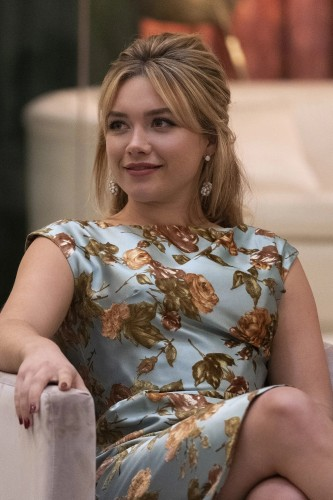
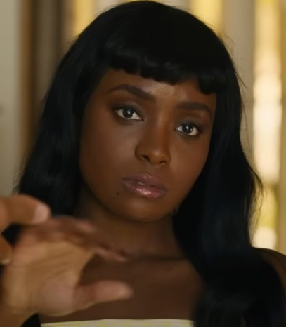

Inicio
La película trata sobre una ama de casa de la década de 1950 que vive
con su esposo en una comunidad experimental utópica, la que comienza a
preocuparse de que su glamorosa compañía pueda estar ocultando
secretos inquietantes.
Una película que se estrenó en 2022 a cargo de Warner Bros. Picture y
que dura 2 horas y 3 minutos. Tiene una calificación de +16 años
debido a que contiene escenas explícitas, contenido y lenguaje
violento. Los géneros de la película son: terror, thriller
psicológico, drama, suspenso y misterio.
Director
La directora de la película es Olivia Wilde, mayormente conocida por
dirigir "Booksmart" y interpretar roles en películas como In time,
Cowboys Aliens y en la famosa serie Dr.House. La directora
incluso interpreta un papel en esta película.
Personajes
Alice Warren
Interpretada por Florence Pugh, Alice es la protagonista de la
película. Es una ama de casa que no puede evitar cuestionar qué están
haciendo en Victoria y que pasa en la ciudad.

Jack Chambers
Interpretado por Harry Styles es el marido de Alice. Trabaja en un
proyecto secreto llamado "Victoria", Jack busca la aprobación de Frank
y hará todo para conseguirla.

Frank
Interpretado por Chris Pine, es el jefe del proyecto "Victoria" y un
gran ejemplo para la comunidad en la que viven Alice y Jack.
Margaret
Interpretada por KiKi Layne, pertenece al grupo de amigas de Alice.
Una ama de casa que después de un accidente empieza a actuar extraño.

Bunny
Interpretada por Olivia Wilde, pertenece al grupo de amigas de Alice.
Era como la madre para todas las amas de casa y les enseñaba como
gastar el dinero de sus maridos y como mantenerlos bajo control.